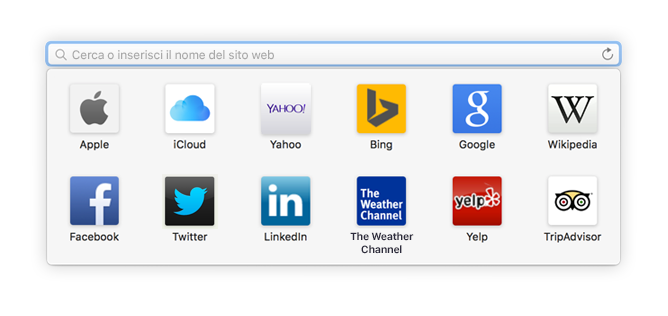
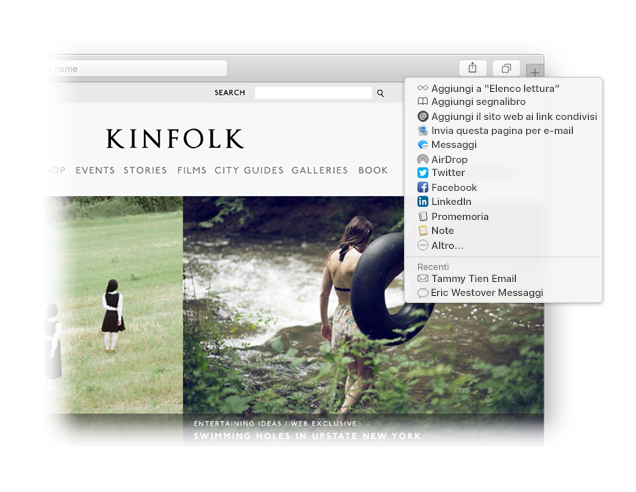

Cerca un preferito.
Fai clic sul campo di ricerca smart per accedere ai tuoi siti web preferiti. Fai clic su un sito per aprirlo.

Contrassegna un sito.
Trascina il pannello a sinistra per contrassegnare un sito e mantenerlo nella barra dei pannelli.

Condividi un link.
Fai clic su  per inviare un link in un'e-mail o un testo, per condividerlo su Facebook o Twitter oppure per aggiungerlo a Note.
per inviare un link in un'e-mail o un testo, per condividerlo su Facebook o Twitter oppure per aggiungerlo a Note.